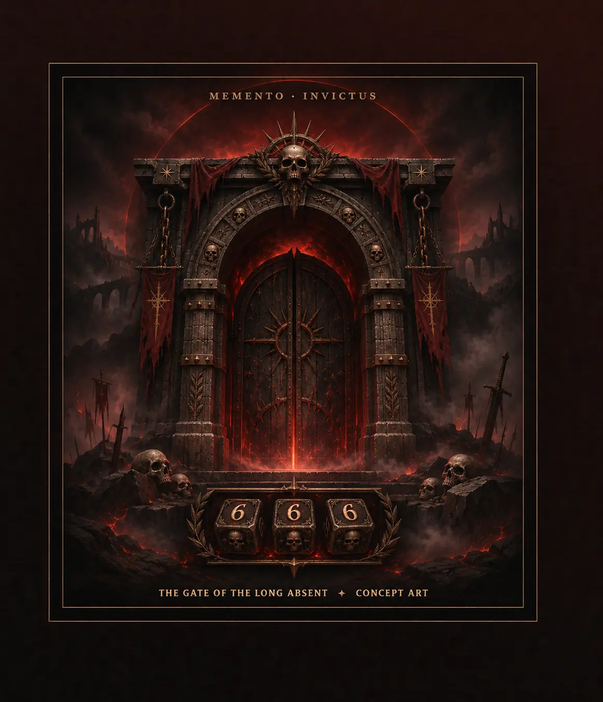

The long absence
Step away for an hour or far longer. The aim is meaningful progress without daily-login pressure or an arbitrary offline cutoff.
Enter a dark-fantasy world built for your own pace. Choose a path, let time pass, and return whenever you are ready.
An independent browser RPG in active development. Its world, features and balance will keep evolving as we build and test them.

I — THE OATH
The game is playable in alpha. These are guiding ideas, not a fixed list of promised features.
Step away for an hour or far longer. The aim is meaningful progress without daily-login pressure or an arbitrary offline cutoff.
Choose what matters to your character, let time pass and return to new possibilities. No endless clicking just to keep moving.
An atmospheric world shaped by original artwork, encounters and the stories that emerge from play.
Start with a focused experience. Keep what makes the game better, and change or discard what does not.
II — THE IRON ARCHIVES
We keep an open archive of the engineering behind idle worlds: combat, probability, long absences and reliable saves. The research is public; the world we build will be our own.
Enter the ArchivesTHE FIRST EMBER
The first gate is open. Explore the playable alpha and follow the project as its world, mechanics and direction take shape.
Inspect the project